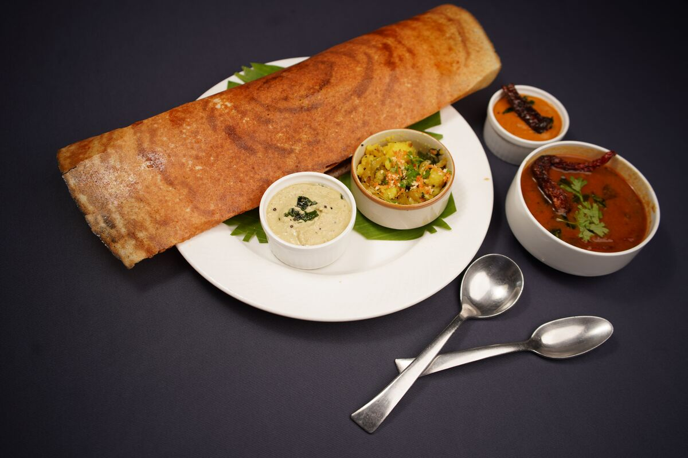

Masala Dosa

Description
Masala dosa is a beloved South Indian breakfast dish. A thin, crispy fermented rice and lentil crepe is filled with a spiced potato mixture and served hot with coconut chutney and sambar.
The perfect balance of crunchy exterior and soft, flavourful filling makes it a favourite across India.
Ingredients
- 2 cups rice
- 1 cup urad dal
- 4 medium potatoes, boiled and mashed
- 1 onion, finely chopped
- 2 green chillies
- 1 tsp mustard seeds
- Curry leaves
- Salt to taste
- Oil for cooking
Steps
- Soak rice and urad dal separately for 4-6 hours, then grind into a smooth batter and ferment overnight.
- Prepare the potato masala:
- Heat oil and temper mustard seeds and curry leaves.
- Add onions, green chillies, and mashed potatoes. Cook until well mixed.
- Heat a tawa, pour a ladle of batter and spread it thin in a circle.
- Drizzle oil around the edges and cook until crisp and golden.
- Place a spoonful of potato masala in the centre, fold the dosa, and serve hot.
Do not leave the dosa unattended while cooking - it burns quickly once it starts crisping.
Serve it immediately for the best crunch.